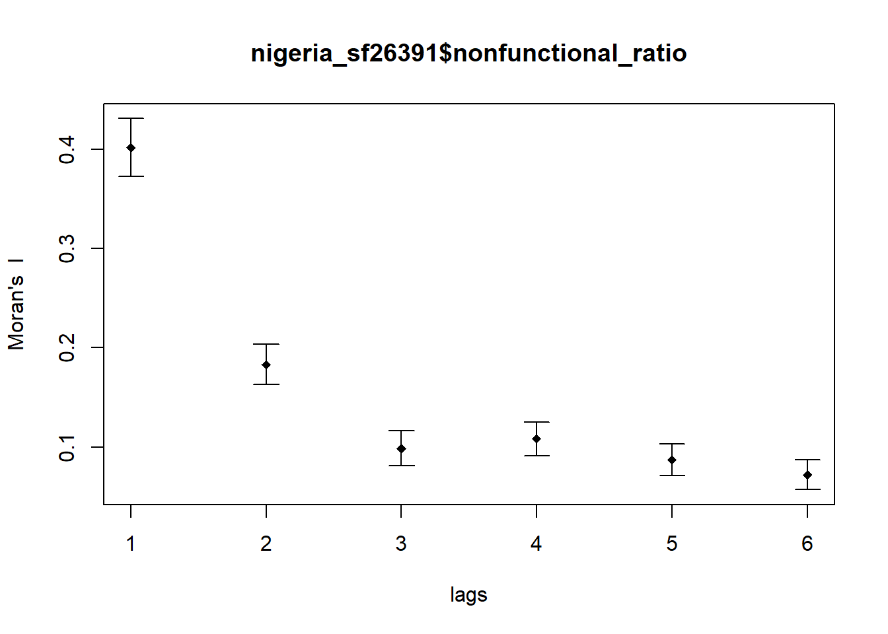
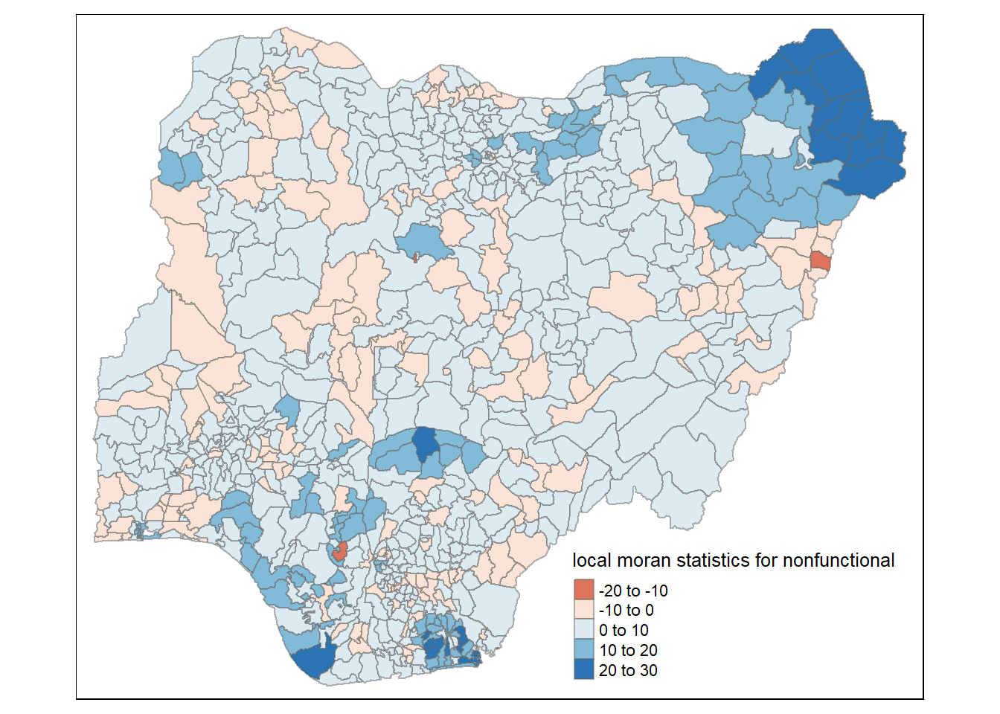
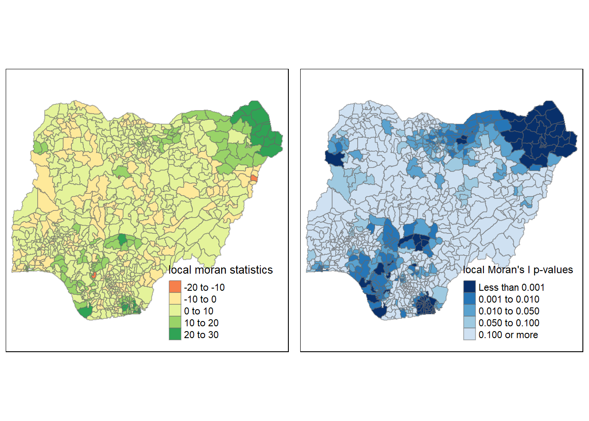
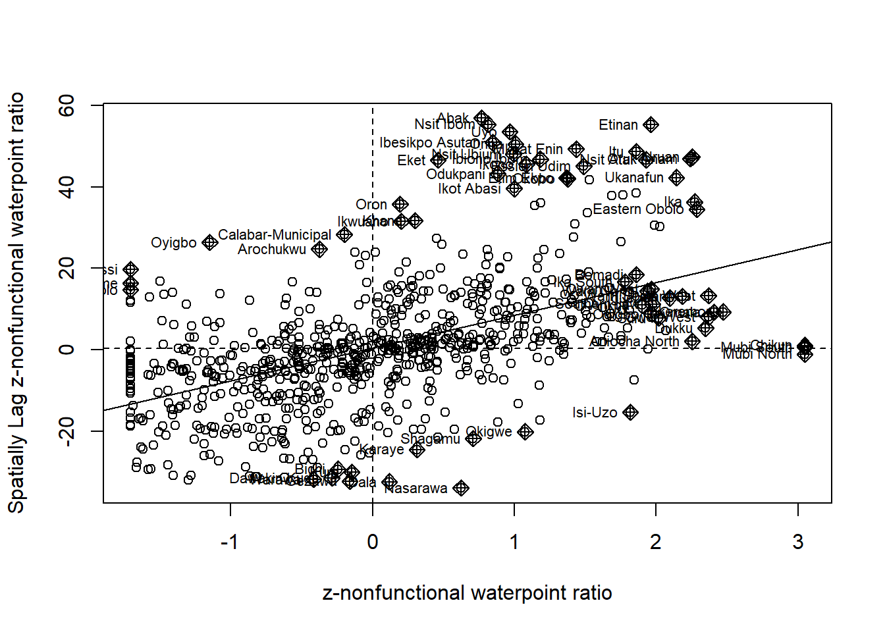
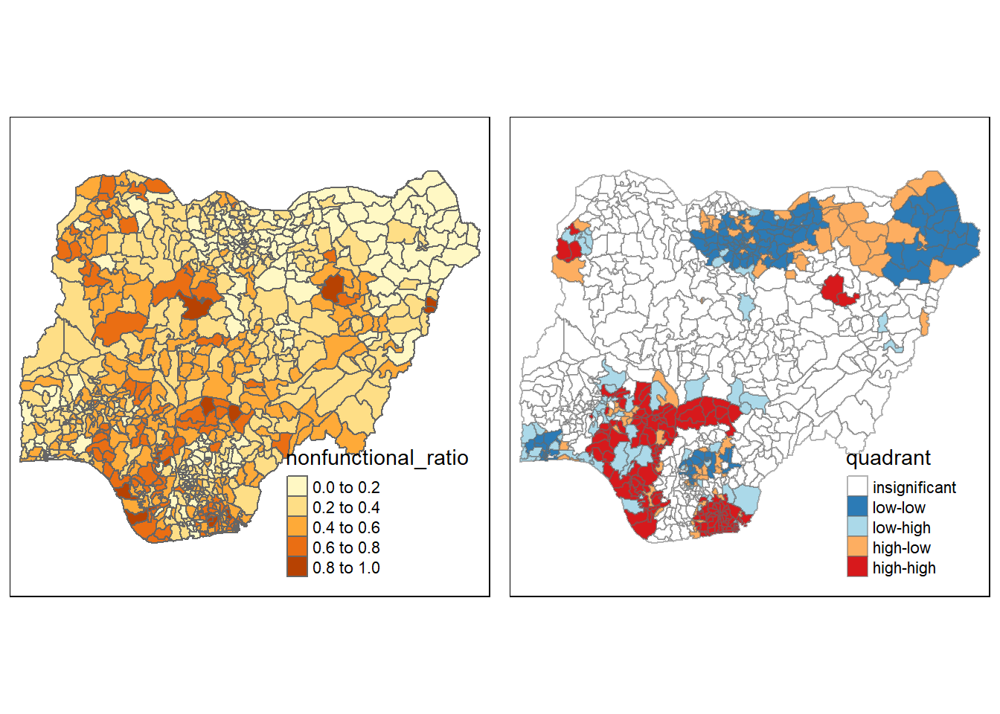

pacman::p_load(sf, tmap, tidyverse, spdep,ggplot2, dplyr, funModeling)Take-home_Ex1
ISSS624 Take-Home Exercise 1
By Han Shumin
29 November 2022
1 Overview
Geospatial analytics hold tremendous potential to address complex problems facing society. In this study, we are tasked to apply appropriate global and local measures of spatial Association techniques to reveals the spatial patterns of Not Functional water points. For the purpose of this study, Nigeria will be used as the study country.
The specific tasks of this take-home exercise are as follows:
Using appropriate sf method, import the shapefile into R and save it in a simple feature data frame format. Note that there are three Projected Coordinate Systems of Nigeria, they are: EPSG: 26391, 26392, and 26303. In this work, EPSG: 26391 was choosen for the projected coordinate system for Nigeria.
Using appropriate tidyr and dplyr methods, derive the proportion of functional and non-functional water point at LGA level.
Combining the geospatial and aspatial data frame into simple feature data frame.
Performing outliers/clusters analysis by using appropriate local measures of spatial association methods.
Performing hotspot areas analysis by using appropriate local measures of spatial association methods.
2 The Dataset
Apstial data
For the purpose of this assignment, data from WPdx Global Data Repositories will be used. There are two versions of the data. They are: WPdx-Basic and WPdx+. The filtered Nigeria csv file was downloaded from WPdx+ site.
Geospatial data
Nigeria Level-2 Administrative Boundary (also known as Local Government Area) polygon features GIS data is used in this take-home exercise. The data is downloaded from geoBoundaries.
3 Setting Up Working Environment
The code chunk below will install and load tidyverse and sf packages.
4 Geopsatial Data Wrangling
4.1 Loading up the Geospatial Data
nigeria_sf <- st_read(dsn = "data/geospatial",
layer = "geoBoundaries-NGA-ADM2")Reading layer `geoBoundaries-NGA-ADM2' from data source
`C:\Users\Shumin\Documents\Documents Files\Learning\SMU\ISSS624 Applied Geospatial Analytics\shumin86718\ISSS624\Take-home_Ex\Take-home_Ex1\data\geospatial'
using driver `ESRI Shapefile'
Simple feature collection with 774 features and 5 fields
Geometry type: MULTIPOLYGON
Dimension: XY
Bounding box: xmin: 2.668534 ymin: 4.273007 xmax: 14.67882 ymax: 13.89442
Geodetic CRS: WGS 844.2 Import csv file into R environment
nigeria_data <- read_csv("data/aspatial/nigeria.csv")Rows: 95008 Columns: 50
── Column specification ────────────────────────────────────────────────────────
Delimiter: ","
chr (27): #source, #status_id, #water_source_clean, #water_source_category, ...
dbl (19): #lat_deg, #lon_deg, #install_year, #distance_to_primary_road, #dis...
lgl (4): is_urban, latest_record, lat_deg_original, lon_deg_original
ℹ Use `spec()` to retrieve the full column specification for this data.
ℹ Specify the column types or set `show_col_types = FALSE` to quiet this message.There are a lot of missing input in status_clean column which is our target column to differentiate the functional and non-functional water points.
nigeria_data[rowSums(is.na(nigeria_data))!=0,]# A tibble: 95,008 × 50
`#source` #lat_…¹ #lon_…² #stat…³ #wate…⁴ #wate…⁵ #wate…⁶ #wate…⁷ #clea…⁸
<chr> <dbl> <dbl> <chr> <chr> <chr> <chr> <chr> <chr>
1 GRID3 5.81 7.92 Unknown <NA> <NA> Tapsta… Tapsta… Nigeria
2 GRID3 7.98 5.12 Unknown <NA> <NA> Tapsta… Tapsta… Nigeria
3 WaterAid 6.78 7.66 Yes Boreho… Well Hand P… Hand P… Nigeria
4 WaterAid 6.96 7.78 Yes Boreho… Well Hand P… Hand P… Nigeria
5 Living Water… 7.37 8.96 Yes Boreho… Well Hand P… Hand P… Nigeria
6 Living Water… 7.16 9.04 Yes Boreho… Well Mechan… Mechan… Nigeria
7 Living Water… 7.32 9.02 Yes Boreho… Well Mechan… Mechan… Nigeria
8 GRID3 5.57 6.96 Unknown Boreho… Well <NA> <NA> Nigeria
9 GRID3 5.99 8.26 Unknown Boreho… Well <NA> <NA> Nigeria
10 GRID3 9.01 3.92 Unknown Boreho… Well <NA> <NA> Nigeria
# … with 94,998 more rows, 41 more variables: `#clean_adm1` <chr>,
# `#clean_adm2` <chr>, `#install_year` <dbl>, `#management_clean` <chr>,
# `#status_clean` <chr>, `#pay` <chr>, `#subjective_quality` <chr>,
# `#country_id` <chr>, `#distance_to_primary_road` <dbl>,
# `#distance_to_secondary_road` <dbl>, `#distance_to_tertiary_road` <dbl>,
# `#distance_to_city` <dbl>, `#distance_to_town` <dbl>, rehab_priority <dbl>,
# water_point_population <dbl>, local_population_1km <dbl>, …Recode all the NA values in #status_clean field into Unknown.
nigeria_data$`#status_clean`[is.na(nigeria_data$`#status_clean`)] <- "Unknown"Create functional, nonfunctional, unknown columns.
functional <- nigeria_data %>%
filter(`#status_clean` %in% c("Functional", "Functional but not in use" , "Functional but needs repair")) %>%
select(`#lat_deg`, `#lon_deg`, `#water_source_category`, `#clean_adm2`, `#status_clean`)nonfunctional <- nigeria_data %>%
filter(`#status_clean` %in% c("Abandoned/Decommissioned", "Abandoned", "Non functional due to dry season", "Non-Functional", "Non-Functional due to dry season")) %>%
select(`#lat_deg`, `#lon_deg`, `#water_source_category`, `#clean_adm2`, `#status_clean`)unknown <- nigeria_data %>%
filter(`#status_clean` %in% c("Unknown")) %>%
select(`#lat_deg`, `#lon_deg`, `#water_source_category`, `#clean_adm2`, `#status_clean`)This is the coordinate system of nigeria_sf simple feature data frame by using st_crs() of sf package as shown in the code chunk below.
st_crs(nigeria_sf)Coordinate Reference System:
User input: WGS 84
wkt:
GEOGCRS["WGS 84",
ENSEMBLE["World Geodetic System 1984 ensemble",
MEMBER["World Geodetic System 1984 (Transit)"],
MEMBER["World Geodetic System 1984 (G730)"],
MEMBER["World Geodetic System 1984 (G873)"],
MEMBER["World Geodetic System 1984 (G1150)"],
MEMBER["World Geodetic System 1984 (G1674)"],
MEMBER["World Geodetic System 1984 (G1762)"],
MEMBER["World Geodetic System 1984 (G2139)"],
ELLIPSOID["WGS 84",6378137,298.257223563,
LENGTHUNIT["metre",1]],
ENSEMBLEACCURACY[2.0]],
PRIMEM["Greenwich",0,
ANGLEUNIT["degree",0.0174532925199433]],
CS[ellipsoidal,2],
AXIS["geodetic latitude (Lat)",north,
ORDER[1],
ANGLEUNIT["degree",0.0174532925199433]],
AXIS["geodetic longitude (Lon)",east,
ORDER[2],
ANGLEUNIT["degree",0.0174532925199433]],
USAGE[
SCOPE["Horizontal component of 3D system."],
AREA["World."],
BBOX[-90,-180,90,180]],
ID["EPSG",4326]]The code chunk below converts nigeria water data frame into a simple feature data frame by using st_as_sf() of sf packages.
nigeria_data_sf <- st_as_sf(nigeria_data,
coords = c("#lon_deg", "#lat_deg"),
crs=4326) functional <- st_as_sf(functional,
coords = c("#lon_deg", "#lat_deg"),
crs=4326) nonfunctional <- st_as_sf(nonfunctional,
coords = c("#lon_deg", "#lat_deg"),
crs=4326)unknown <- st_as_sf(unknown,
coords = c("#lon_deg", "#lat_deg"),
crs=4326)Below code chunks create new columns of total water point count, functional/non-functional and unknown water points count.
nigeria_sf$WaterpointCount <- lengths(st_intersects(nigeria_sf, nigeria_data_sf))nigeria_sf$functional<- lengths(st_intersects(nigeria_sf, functional))nigeria_sf$nonfunctional <- lengths(st_intersects(nigeria_sf, nonfunctional))nigeria_sf$unknown <- lengths(st_intersects(nigeria_sf, unknown))Also the ratios of functional/non-functional, and unknown water points are been created.
nigeria_sf <- nigeria_sf %>%
mutate(`functional_ratio` = `functional`/`WaterpointCount`)nigeria_sf <- nigeria_sf %>%
mutate(`nonfunctional_ratio` = `nonfunctional`/`WaterpointCount`)nigeria_sf <- nigeria_sf %>%
mutate(`unknown_ratio` = `unknown`/`WaterpointCount`)As per highlighted in the take-home exercise 1 requirement, there are three Projected Coordinate Systems of Nigeria, they are: EPSG: 26391, 26392, and 26303. In this exercise, EPSG: 26391 has been used.
nigeria_sf26391 <- st_transform(nigeria_sf,
crs = 26391)st_crs(nigeria_sf26391)Coordinate Reference System:
User input: EPSG:26391
wkt:
PROJCRS["Minna / Nigeria West Belt",
BASEGEOGCRS["Minna",
DATUM["Minna",
ELLIPSOID["Clarke 1880 (RGS)",6378249.145,293.465,
LENGTHUNIT["metre",1]]],
PRIMEM["Greenwich",0,
ANGLEUNIT["degree",0.0174532925199433]],
ID["EPSG",4263]],
CONVERSION["Nigeria West Belt",
METHOD["Transverse Mercator",
ID["EPSG",9807]],
PARAMETER["Latitude of natural origin",4,
ANGLEUNIT["degree",0.0174532925199433],
ID["EPSG",8801]],
PARAMETER["Longitude of natural origin",4.5,
ANGLEUNIT["degree",0.0174532925199433],
ID["EPSG",8802]],
PARAMETER["Scale factor at natural origin",0.99975,
SCALEUNIT["unity",1],
ID["EPSG",8805]],
PARAMETER["False easting",230738.26,
LENGTHUNIT["metre",1],
ID["EPSG",8806]],
PARAMETER["False northing",0,
LENGTHUNIT["metre",1],
ID["EPSG",8807]]],
CS[Cartesian,2],
AXIS["(E)",east,
ORDER[1],
LENGTHUNIT["metre",1]],
AXIS["(N)",north,
ORDER[2],
LENGTHUNIT["metre",1]],
USAGE[
SCOPE["Engineering survey, topographic mapping."],
AREA["Nigeria - onshore west of 6°30'E, onshore and offshore shelf."],
BBOX[3.57,2.69,13.9,6.5]],
ID["EPSG",26391]]tm_shape(nigeria_sf26391)+
tm_fill("functional_ratio",
style = "quantile",
palette = "Blues",
title = "functional waterpoint ratio") +
tm_layout(main.title = "Distribution of Functional Water Point Ratio by L2 LGA",
main.title.position = "center",
main.title.size = 1,
legend.height = 0.45,
legend.width = 0.35,
frame = TRUE) +
tm_borders(alpha = 0.5) +
tm_compass(type="8star", size = 2) +
tm_scale_bar() +
tm_grid(alpha =0.2) +
tm_credits("Source: Level 2 Local Government Area from GeoBoundaries\n and Water Point data from WPdx Global Data Repositories",
position = c("left", "bottom"))
tm_shape(nigeria_sf26391)+
tm_fill("nonfunctional_ratio",
style = "quantile",
palette = "Greens",
title = "nonfunctional waterpoint ratio") +
tm_layout(main.title = "Distribution of nonFunctional Water Point Ratio by L2 LGA",
main.title.position = "center",
main.title.size = 1,
legend.height = 0.45,
legend.width = 0.35,
frame = TRUE) +
tm_borders(alpha = 0.5) +
tm_compass(type="8star", size = 2) +
tm_scale_bar() +
tm_grid(alpha =0.2) +
tm_credits("Source: Level 2 Local Government Area from GeoBoundaries\n and Water Point data from WPdx Global Data Repositories",
position = c("left", "bottom"))
tm_shape(nigeria_sf26391)+
tm_fill("unknown_ratio",
style = "quantile",
palette = "Oranges",
title = "unknown waterpoint ratio") +
tm_layout(main.title = "Distribution of unknown Water Point Ratio by L2 LGA",
main.title.position = "center",
main.title.size = 1,
legend.height = 0.45,
legend.width = 0.35,
frame = TRUE) +
tm_borders(alpha = 0.5) +
tm_compass(type="8star", size = 2) +
tm_scale_bar() +
tm_grid(alpha =0.2) +
tm_credits("Source: Level 2 Local Government Area from GeoBoundaries\n and Water Point data from WPdx Global Data Repositories",
position = c("left", "bottom"))
5 Spatial Weights and Applications
The polygon contiguity method is effective when polygons are similar in size and distribution, and when spatial relationships are a function of polygon proximity. In this study, the polygons data have a big variation in polygon size, therefore distance based weighting method is more appropriated.
We will derive distance-based weight matrices by using dnearneigh() of spdep package.
Firstly, we need to determine the upper limit for distance band by using the steps below:
Return a matrix with the indices of points belonging to the set of the k nearest neighbours of each other by using knearneigh() of spdep.
Convert the knn object returned by knearneigh() into a neighbours list of class nb with a list of integer vectors containing neighbour region number ids by using knn2nb().
Return the length of neighbour relationship edges by using nbdists() of spdep. The function returns in the units of the coordinates if the coordinates are projected, in km otherwise.
Remove the list structure of the returned object by using unlist().
5.1 Determine the cut-off distance
coords <- st_centroid(st_geometry(nigeria_sf26391))
k1 <- knn2nb(knearneigh(coords))
k1dists <- unlist(nbdists(k1, coords, longlat = TRUE))Warning in nbdists(k1, coords, longlat = TRUE): dnearneigh: longlat argument
overrides objectsummary(k1dists) Min. 1st Qu. Median Mean 3rd Qu. Max.
2669 12834 20304 22084 27783 72139 The summary report shows that the largest first nearest neighbour distance is 72139m, so using this as the upper threshold gives certainty that all units will have at least one neighbour.
5.2 Computing fixed distance weight matrix
wm_d73 <- dnearneigh(coords, 0, 72139, longlat = TRUE)Warning in dnearneigh(coords, 0, 72139, longlat = TRUE): dnearneigh: longlat
argument overrides objectwm_d73Neighbour list object:
Number of regions: 774
Number of nonzero links: 18130
Percentage nonzero weights: 3.026327
Average number of links: 23.42377 The red lines show the links of 1st nearest neighbours and the black lines show the links of neighbours within the cut-off distance of 73km. We can plot both of them next to each other by using the code chunk below.
par(mfrow=c(1,2))
plot(nigeria_sf26391$geometry, border="lightgrey")
plot(k1, coords, add=TRUE, col="red", length=0.08, main="1st nearest neighbours")
plot(nigeria_sf26391$geometry, border="lightgrey")
plot(wm_d73, coords, add=TRUE, pch = 19, cex = 0.6, main="Distance link")
5.3 Computing adaptive distance weight matrix
One of the characteristics of fixed distance weight matrix is that more densely settled areas (usually the urban areas) tend to have more neighbours and the less densely settled areas (usually the rural counties) tend to have lesser neighbours. Having many neighbours smoothes the neighbour relationship across more neighbours.
It is possible to control the numbers of neighbours directly using k-nearest neighbours, either accepting asymmetric neighbours or imposing symmetry as shown in the code chunk below.
knn8 <- knn2nb(knearneigh(coords, k=8))
knn8Neighbour list object:
Number of regions: 774
Number of nonzero links: 6192
Percentage nonzero weights: 1.033592
Average number of links: 8
Non-symmetric neighbours listPlotting distance based neighbours
plot(nigeria_sf26391$geometry, border="lightgrey")
plot(knn8, coords, pch = 19, cex = 0.6, add = TRUE, col = "red")5.4 Weights based on IDW
We will derive a spatial weight matrix based on inversed Distance method.
we need to assign weights to each neighboring polygon. In our case, each neighboring polygon will be assigned equal weight (style=“W”). This is accomplished by assigning the fraction 1/(#ofneighbors) to each neighboring county then summing the weighted income values. While this is the most intuitive way to summaries the neighbors’ values it has one drawback in that polygons along the edges of the study area will base their lagged values on fewer polygons thus potentially over- or under-estimating the true nature of the spatial autocorrelation in the data. For this example, we’ll stick with the style=“W” option for simplicity’s sake but note that other more robust options are available, notably style=“B”.
rswm_d73 <- nb2listw(wm_d73, style = 'B')
summary(rswm_d73)Characteristics of weights list object:
Neighbour list object:
Number of regions: 774
Number of nonzero links: 18130
Percentage nonzero weights: 3.026327
Average number of links: 23.42377
Link number distribution:
1 2 3 4 5 6 7 8 9 10 11 12 13 14 15 16 17 18 19 20 21 22 23 24 25 26
5 9 11 22 32 35 33 34 29 35 27 18 21 23 16 12 12 11 16 17 16 10 14 10 5 13
27 28 29 30 31 32 33 34 35 36 37 38 39 40 41 42 43 44 45 46 47 48 49 50 51 52
12 5 15 13 12 7 10 8 12 5 12 17 14 9 10 4 5 3 7 6 11 8 5 5 4 2
53 54 55 56 57 58 59 60 61 62 63 64 65 67 68 70
3 3 6 3 5 6 2 5 5 8 6 6 4 3 1 1
5 least connected regions:
90 112 123 237 670 with 1 link
1 most connected region:
585 with 70 links
Weights style: B
Weights constants summary:
n nn S0 S1 S2
B 774 599076 18130 36260 2622544knn_lw <- nb2listw(knn8, style = 'B')
summary(knn_lw)Characteristics of weights list object:
Neighbour list object:
Number of regions: 774
Number of nonzero links: 6192
Percentage nonzero weights: 1.033592
Average number of links: 8
Non-symmetric neighbours list
Link number distribution:
8
774
774 least connected regions:
1 2 3 4 5 6 7 8 9 10 11 12 13 14 15 16 17 18 19 20 21 22 23 24 25 26 27 28 29 30 31 32 33 34 35 36 37 38 39 40 41 42 43 44 45 46 47 48 49 50 51 52 53 54 55 56 57 58 59 60 61 62 63 64 65 66 67 68 69 70 71 72 73 74 75 76 77 78 79 80 81 82 83 84 85 86 87 88 89 90 91 92 93 94 95 96 97 98 99 100 101 102 103 104 105 106 107 108 109 110 111 112 113 114 115 116 117 118 119 120 121 122 123 124 125 126 127 128 129 130 131 132 133 134 135 136 137 138 139 140 141 142 143 144 145 146 147 148 149 150 151 152 153 154 155 156 157 158 159 160 161 162 163 164 165 166 167 168 169 170 171 172 173 174 175 176 177 178 179 180 181 182 183 184 185 186 187 188 189 190 191 192 193 194 195 196 197 198 199 200 201 202 203 204 205 206 207 208 209 210 211 212 213 214 215 216 217 218 219 220 221 222 223 224 225 226 227 228 229 230 231 232 233 234 235 236 237 238 239 240 241 242 243 244 245 246 247 248 249 250 251 252 253 254 255 256 257 258 259 260 261 262 263 264 265 266 267 268 269 270 271 272 273 274 275 276 277 278 279 280 281 282 283 284 285 286 287 288 289 290 291 292 293 294 295 296 297 298 299 300 301 302 303 304 305 306 307 308 309 310 311 312 313 314 315 316 317 318 319 320 321 322 323 324 325 326 327 328 329 330 331 332 333 334 335 336 337 338 339 340 341 342 343 344 345 346 347 348 349 350 351 352 353 354 355 356 357 358 359 360 361 362 363 364 365 366 367 368 369 370 371 372 373 374 375 376 377 378 379 380 381 382 383 384 385 386 387 388 389 390 391 392 393 394 395 396 397 398 399 400 401 402 403 404 405 406 407 408 409 410 411 412 413 414 415 416 417 418 419 420 421 422 423 424 425 426 427 428 429 430 431 432 433 434 435 436 437 438 439 440 441 442 443 444 445 446 447 448 449 450 451 452 453 454 455 456 457 458 459 460 461 462 463 464 465 466 467 468 469 470 471 472 473 474 475 476 477 478 479 480 481 482 483 484 485 486 487 488 489 490 491 492 493 494 495 496 497 498 499 500 501 502 503 504 505 506 507 508 509 510 511 512 513 514 515 516 517 518 519 520 521 522 523 524 525 526 527 528 529 530 531 532 533 534 535 536 537 538 539 540 541 542 543 544 545 546 547 548 549 550 551 552 553 554 555 556 557 558 559 560 561 562 563 564 565 566 567 568 569 570 571 572 573 574 575 576 577 578 579 580 581 582 583 584 585 586 587 588 589 590 591 592 593 594 595 596 597 598 599 600 601 602 603 604 605 606 607 608 609 610 611 612 613 614 615 616 617 618 619 620 621 622 623 624 625 626 627 628 629 630 631 632 633 634 635 636 637 638 639 640 641 642 643 644 645 646 647 648 649 650 651 652 653 654 655 656 657 658 659 660 661 662 663 664 665 666 667 668 669 670 671 672 673 674 675 676 677 678 679 680 681 682 683 684 685 686 687 688 689 690 691 692 693 694 695 696 697 698 699 700 701 702 703 704 705 706 707 708 709 710 711 712 713 714 715 716 717 718 719 720 721 722 723 724 725 726 727 728 729 730 731 732 733 734 735 736 737 738 739 740 741 742 743 744 745 746 747 748 749 750 751 752 753 754 755 756 757 758 759 760 761 762 763 764 765 766 767 768 769 770 771 772 773 774 with 8 links
774 most connected regions:
1 2 3 4 5 6 7 8 9 10 11 12 13 14 15 16 17 18 19 20 21 22 23 24 25 26 27 28 29 30 31 32 33 34 35 36 37 38 39 40 41 42 43 44 45 46 47 48 49 50 51 52 53 54 55 56 57 58 59 60 61 62 63 64 65 66 67 68 69 70 71 72 73 74 75 76 77 78 79 80 81 82 83 84 85 86 87 88 89 90 91 92 93 94 95 96 97 98 99 100 101 102 103 104 105 106 107 108 109 110 111 112 113 114 115 116 117 118 119 120 121 122 123 124 125 126 127 128 129 130 131 132 133 134 135 136 137 138 139 140 141 142 143 144 145 146 147 148 149 150 151 152 153 154 155 156 157 158 159 160 161 162 163 164 165 166 167 168 169 170 171 172 173 174 175 176 177 178 179 180 181 182 183 184 185 186 187 188 189 190 191 192 193 194 195 196 197 198 199 200 201 202 203 204 205 206 207 208 209 210 211 212 213 214 215 216 217 218 219 220 221 222 223 224 225 226 227 228 229 230 231 232 233 234 235 236 237 238 239 240 241 242 243 244 245 246 247 248 249 250 251 252 253 254 255 256 257 258 259 260 261 262 263 264 265 266 267 268 269 270 271 272 273 274 275 276 277 278 279 280 281 282 283 284 285 286 287 288 289 290 291 292 293 294 295 296 297 298 299 300 301 302 303 304 305 306 307 308 309 310 311 312 313 314 315 316 317 318 319 320 321 322 323 324 325 326 327 328 329 330 331 332 333 334 335 336 337 338 339 340 341 342 343 344 345 346 347 348 349 350 351 352 353 354 355 356 357 358 359 360 361 362 363 364 365 366 367 368 369 370 371 372 373 374 375 376 377 378 379 380 381 382 383 384 385 386 387 388 389 390 391 392 393 394 395 396 397 398 399 400 401 402 403 404 405 406 407 408 409 410 411 412 413 414 415 416 417 418 419 420 421 422 423 424 425 426 427 428 429 430 431 432 433 434 435 436 437 438 439 440 441 442 443 444 445 446 447 448 449 450 451 452 453 454 455 456 457 458 459 460 461 462 463 464 465 466 467 468 469 470 471 472 473 474 475 476 477 478 479 480 481 482 483 484 485 486 487 488 489 490 491 492 493 494 495 496 497 498 499 500 501 502 503 504 505 506 507 508 509 510 511 512 513 514 515 516 517 518 519 520 521 522 523 524 525 526 527 528 529 530 531 532 533 534 535 536 537 538 539 540 541 542 543 544 545 546 547 548 549 550 551 552 553 554 555 556 557 558 559 560 561 562 563 564 565 566 567 568 569 570 571 572 573 574 575 576 577 578 579 580 581 582 583 584 585 586 587 588 589 590 591 592 593 594 595 596 597 598 599 600 601 602 603 604 605 606 607 608 609 610 611 612 613 614 615 616 617 618 619 620 621 622 623 624 625 626 627 628 629 630 631 632 633 634 635 636 637 638 639 640 641 642 643 644 645 646 647 648 649 650 651 652 653 654 655 656 657 658 659 660 661 662 663 664 665 666 667 668 669 670 671 672 673 674 675 676 677 678 679 680 681 682 683 684 685 686 687 688 689 690 691 692 693 694 695 696 697 698 699 700 701 702 703 704 705 706 707 708 709 710 711 712 713 714 715 716 717 718 719 720 721 722 723 724 725 726 727 728 729 730 731 732 733 734 735 736 737 738 739 740 741 742 743 744 745 746 747 748 749 750 751 752 753 754 755 756 757 758 759 760 761 762 763 764 765 766 767 768 769 770 771 772 773 774 with 8 links
Weights style: B
Weights constants summary:
n nn S0 S1 S2
B 774 599076 6192 11154 2019406 Global Spatial Autocorrelation
6.2 Global Spatial Autocorrelation: Moran’s I
6.2.1 Moron’s I test for nonfunctional waterpoint count
nigeria_sf26391$`functional_ratio`[is.na(nigeria_sf26391$`functional_ratio`)] <- 0nigeria_sf26391$`nonfunctional_ratio`[is.na(nigeria_sf26391$`nonfunctional_ratio`)] <- 0nigeria_sf26391$`unknown_ratio`[is.na(nigeria_sf26391$`unknown_ratio`)] <- 0set.ZeroPolicyOption(TRUE)[1] FALSEThe code chunk below performs Moran’s I statistical testing using moran.test() of spdep for fixed distance weighting and adaptive weighting.
moran.test(nigeria_sf26391$`nonfunctional_ratio`,
listw=rswm_d73,
na.action=na.omit)
Moran I test under randomisation
data: nigeria_sf26391$nonfunctional_ratio
weights: rswm_d73
Moran I statistic standard deviate = 34.007, p-value < 2.2e-16
alternative hypothesis: greater
sample estimates:
Moran I statistic Expectation Variance
0.3445017224 -0.0012936611 0.0001033966 moran.test(nigeria_sf26391$`nonfunctional_ratio`,
listw=knn_lw,
na.action=na.omit)
Moran I test under randomisation
data: nigeria_sf26391$nonfunctional_ratio
weights: knn_lw
Moran I statistic standard deviate = 27.282, p-value < 2.2e-16
alternative hypothesis: greater
sample estimates:
Moran I statistic Expectation Variance
0.4613882839 -0.0012936611 0.0002876085 Computing Monte Carlo Moran’s I
The code chunk below performs permutation test for Moran’s I statistic by using moran.mc() of spdep. A total of 1000 simulation will be performed.
set.seed(1234)
bperm_nonfun= moran.mc(nigeria_sf26391$`nonfunctional_ratio`,
listw=rswm_d73,
nsim=999,
na.action=na.omit)
bperm_nonfun
Monte-Carlo simulation of Moran I
data: nigeria_sf26391$nonfunctional_ratio
weights: rswm_d73
number of simulations + 1: 1000
statistic = 0.3445, observed rank = 1000, p-value = 0.001
alternative hypothesis: greaterset.seed(1234)
bperm_nonfun_adp= moran.mc(nigeria_sf26391$`nonfunctional_ratio`,
listw=knn_lw,
nsim=999,
na.action=na.omit)
bperm_nonfun_adp
Monte-Carlo simulation of Moran I
data: nigeria_sf26391$nonfunctional_ratio
weights: knn_lw
number of simulations + 1: 1000
statistic = 0.46139, observed rank = 1000, p-value = 0.001
alternative hypothesis: greaterVisualising Monte Carlo Moran’s I
Let’s examine the simulated Moran’s I test statistics in details. This can be achieved by plotting the distribution of the statistical values as a histogram by using the code chunk below.
hist(bperm_nonfun$res,
freq=TRUE,
breaks=50,
xlab="Simulated Moran's I")
abline(v=0,
col="red") hist(bperm_nonfun_adp$res,
freq=TRUE,
breaks=50,
xlab="Simulated Moran's I")
abline(v=0,
col="red") 6.3 Global Spatial Autocorrelation: Geary’s
The code chunk below performs Geary’s C test for spatial autocorrelation by using geary.test() of spdep.
geary.test(nigeria_sf26391$`nonfunctional_ratio`,
listw=rswm_d73)
Geary C test under randomisation
data: nigeria_sf26391$nonfunctional_ratio
weights: rswm_d73
Geary C statistic standard deviate = 11.46, p-value < 2.2e-16
alternative hypothesis: Expectation greater than statistic
sample estimates:
Geary C statistic Expectation Variance
0.602551159 1.000000000 0.001202708 Computing Monte Carlo Geary’s C
The code chunk below performs permutation test for Geary’s C statistic by using geary.mc() of spdep.
set.seed(1234)
bperm_nonfun=geary.mc(nigeria_sf26391$`nonfunctional_ratio`,
listw=rswm_d73,
nsim=999)
bperm_nonfun
Monte-Carlo simulation of Geary C
data: nigeria_sf26391$nonfunctional_ratio
weights: rswm_d73
number of simulations + 1: 1000
statistic = 0.60255, observed rank = 1, p-value = 0.001
alternative hypothesis: greaterVisualising the Monte Carlo Geary’s C
Next, we will plot a histogram to reveal the distribution of the simulated values by using the code chunk below.
hist(bperm_nonfun$res, freq=TRUE, breaks=50, xlab="Simulated Geary c")
abline(v=1, col="red") 6.4 Spatial Correlogram
Spatial correlograms are used to examine patterns of spatial autocorrelation in the data or model residuals. They show how correlated are pairs of spatial observations when increase the distance (lag) between them - they are plots of some index of autocorrelation (Moran’s I or Geary’s c) against distance. Although correlograms are not as fundamental as variograms (a keystone concept of geostatistics), they are very useful as an exploratory and descriptive tool. For this purpose they actually provide richer information than variograms.
6.4.1 Compute Moran’s I correlogram
In the code chunk below, sp.correlogram() of spdep package is used to compute a 6-lag spatial correlogram. The global spatial autocorrelation used in Moran’s I. The plot() of base Graph is then used to plot the output.
MI_corr <- sp.correlogram(wm_d73,
nigeria_sf26391$`nonfunctional_ratio`,
order=6,
method="I",
style="W")
plot(MI_corr)
print(MI_corr)Spatial correlogram for nigeria_sf26391$nonfunctional_ratio
method: Moran's I
estimate expectation variance standard deviate Pr(I) two sided
1 (774) 4.0154e-01 -1.2937e-03 2.1432e-04 27.5167 < 2.2e-16
2 (772) 1.8314e-01 -1.2970e-03 1.0475e-04 18.0207 < 2.2e-16
3 (772) 9.8593e-02 -1.2970e-03 7.8737e-05 11.2572 < 2.2e-16
4 (772) 1.0825e-01 -1.2970e-03 7.1175e-05 12.9854 < 2.2e-16
5 (772) 8.7266e-02 -1.2970e-03 6.4608e-05 11.0182 < 2.2e-16
6 (772) 7.2134e-02 -1.2970e-03 5.6573e-05 9.7628 < 2.2e-16
1 (774) ***
2 (772) ***
3 (772) ***
4 (772) ***
5 (772) ***
6 (772) ***
---
Signif. codes: 0 '***' 0.001 '**' 0.01 '*' 0.05 '.' 0.1 ' ' 16.4.2 Compute Geary’s C correlogram and plot
In the code chunk below, sp.correlogram() of spdep package is used to compute a 6-lag spatial correlogram. The global spatial autocorrelation used in Geary’s C. The plot() of base Graph is then used to plot the output.
GC_corr <- sp.correlogram(wm_d73,
nigeria_sf26391$`nonfunctional_ratio`,
order=6,
method="C",
style="W")
plot(GC_corr)
print(GC_corr)Spatial correlogram for nigeria_sf26391$nonfunctional_ratio
method: Geary's C
estimate expectation variance standard deviate Pr(I) two sided
1 (774) 0.58896669 1.00000000 0.00023383 -26.8796 < 2.2e-16 ***
2 (772) 0.78488847 1.00000000 0.00015159 -17.4714 < 2.2e-16 ***
3 (772) 0.90920029 1.00000000 0.00013232 -7.8935 2.938e-15 ***
4 (772) 0.94783829 1.00000000 0.00029573 -3.0332 0.0024196 **
5 (772) 0.93985137 1.00000000 0.00031250 -3.4025 0.0006677 ***
6 (772) 0.89562455 1.00000000 0.00020646 -7.2641 3.756e-13 ***
---
Signif. codes: 0 '***' 0.001 '**' 0.01 '*' 0.05 '.' 0.1 ' ' 17 Cluster and Outlier Analysis
Local Indicators of Spatial Association or LISA are statistics that evaluate the existence of clusters in the spatial arrangement of a given variable. For instance if we are studying cancer rates among census tracts in a given city local clusters in the rates mean that there are areas that have higher or lower rates than is to be expected by chance alone; that is, the values occurring are above or below those of a random distribution in space.
7.1 Computing local Moran’s I
To compute local Moran’s I, the localmoran() function of spdep will be used. It computes Ii values, given a set of zi values and a listw object providing neighbour weighting information for the polygon associated with the zi values.
The code chunks below are used to compute local Moran’s I of nonfunctional water point ratio.
fips <- order(nigeria_sf26391$shapeName)local Moran’s I for fixed distance weighting
localMI_dw <- localmoran(nigeria_sf26391$`nonfunctional_ratio`, rswm_d73)
head(localMI_dw) Ii E.Ii Var.Ii Z.Ii Pr(z != E(Ii))
1 19.859734 -0.053430405 38.001610 3.2302733 1.236719e-03
2 14.965087 -0.032466127 23.131099 3.1183314 1.818782e-03
3 5.844103 -0.007560288 5.821992 2.4251775 1.530090e-02
4 0.890740 -0.016485516 12.590245 0.2556808 7.981973e-01
5 43.731876 -0.042825796 30.762102 7.8925110 2.961661e-15
6 8.129756 -0.019706104 14.843439 2.1152498 3.440866e-02local Moran’s I for adaptive distance weighting
localMI_adp <- localmoran(nigeria_sf26391$`nonfunctional_ratio`, knn_lw)
head(localMI_adp) Ii E.Ii Var.Ii Z.Ii Pr(z != E(Ii))
1 5.407157 -0.006784813 5.199415 2.374304 1.758207e-02
2 4.964822 -0.004189178 3.211341 2.772853 5.556728e-03
3 23.376412 -0.030241154 23.106738 4.869339 1.119723e-06
4 1.735812 -0.013188412 10.098598 0.550376 5.820615e-01
5 7.139931 -0.006117971 4.688784 3.300166 9.662752e-04
6 4.593069 -0.007507087 5.752397 1.918173 5.508904e-02localmoran() function returns a matrix of values whose columns are:
Ii: the local Moran’s I statistics
E.Ii: the expectation of local moran statistic under the randomisation hypothesis
Var.Ii: the variance of local moran statistic under the randomisation hypothesis
Z.Ii:the standard deviate of local moran statistic
Pr(): the p-value of local moran statistic
Mapping the local Moran’s I
Before mapping the local Moran’s I map, it is wise to append the local Moran’s I dataframe (i.e. localMI) onto hunan SpatialPolygonDataFrame. The code chunks below can be used to perform the task. T
nigeria_sf26391.localMI_dw <- cbind(nigeria_sf26391,localMI_dw) %>%
rename(Pr.Ii = Pr.z....E.Ii..)nigeria_sf26391.localMI_adp <- cbind(nigeria_sf26391,localMI_adp) %>%
rename(Pr.Ii = Pr.z....E.Ii..)Mapping local Moran’s I values Using choropleth mapping functions of tmap package, we can plot the local Moran’s I values by using the code chinks below.
tm_shape(nigeria_sf26391.localMI_dw) +
tm_fill(col = "Ii",
style = "pretty",
palette = "RdBu",
title = "local moran statistics for nonfunctional") +
tm_borders(alpha = 0.5)Variable(s) "Ii" contains positive and negative values, so midpoint is set to 0. Set midpoint = NA to show the full spectrum of the color palette.
tm_shape(nigeria_sf26391.localMI_adp) +
tm_fill(col = "Ii",
style = "pretty",
palette = "RdBu",
title = "local moran statistics for nonfunctional") +
tm_borders(alpha = 0.5)Variable(s) "Ii" contains positive and negative values, so midpoint is set to 0. Set midpoint = NA to show the full spectrum of the color palette.
Mapping local Moran’s I p-value
The choropleth shows there is evidence for both positive and negative Ii values. However, it is useful to consider the p-values for each of these values, as consider above.
The code chunks below produce a choropleth map of Moran’s I p-values by using functions of tmap package.
tm_shape(nigeria_sf26391.localMI_dw) +
tm_fill(col = "Pr.Ii",
breaks=c(-Inf, 0.001, 0.01, 0.05, 0.1, Inf),
palette="-Blues",
title = "local Moran's I p-values for nonfunctional") +
tm_borders(alpha = 0.5)
tm_shape(nigeria_sf26391.localMI_adp) +
tm_fill(col = "Pr.Ii",
breaks=c(-Inf, 0.001, 0.01, 0.05, 0.1, Inf),
palette="-Blues",
title = "local Moran's I p-values for nonfunctional") +
tm_borders(alpha = 0.5)Mapping both local Moran’s I values and p-values for fixed distance weighting
For effective interpretation, it is better to plot both the local Moran’s I values map and its corresponding p-values map next to each other.
The code chunk below will be used to create such visualisation.
localMI.map <- tm_shape(nigeria_sf26391.localMI_dw) +
tm_fill(col = "Ii",
style = "pretty",
title = "local moran statistics") +
tm_borders(alpha = 0.5)
pvalue.map <- tm_shape(nigeria_sf26391.localMI_dw) +
tm_fill(col = "Pr.Ii",
breaks=c(-Inf, 0.001, 0.01, 0.05, 0.1, Inf),
palette="-Blues",
title = "local Moran's I p-values") +
tm_borders(alpha = 0.5)
tmap_arrange(localMI.map, pvalue.map, asp=1, ncol=2)Variable(s) "Ii" contains positive and negative values, so midpoint is set to 0. Set midpoint = NA to show the full spectrum of the color palette.
Mapping both local Moran’s I values and p-values for adaptive distance weighting
localMI_2.map <- tm_shape(nigeria_sf26391.localMI_adp) +
tm_fill(col = "Ii",
style = "pretty",
title = "local moran statistics") +
tm_borders(alpha = 0.5)
pvalue_2.map <- tm_shape(nigeria_sf26391.localMI_adp) +
tm_fill(col = "Pr.Ii",
breaks=c(-Inf, 0.001, 0.01, 0.05, 0.1, Inf),
palette="-Blues",
title = "local Moran's I p-values") +
tm_borders(alpha = 0.5)
tmap_arrange(localMI_2.map, pvalue_2.map, asp=1, ncol=2)Variable(s) "Ii" contains positive and negative values, so midpoint is set to 0. Set midpoint = NA to show the full spectrum of the color palette.
8 Creating a LISA Cluster Map
The LISA Cluster Map shows the significant locations color coded by type of spatial autocorrelation. The first step before we can generate the LISA cluster map is to plot the Moran scatterplot.
8.1 Plotting Moran scatterplot (fixed distance weighting)
The Moran scatterplot is an illustration of the relationship between the values of the chosen attribute at each location and the average value of the same attribute at neighboring locations.
The code chunk below plots the Moran scatterplot of nonfunctional water ratio by using moran.plot() of spdep.
nci <- moran.plot(nigeria_sf26391$`nonfunctional_ratio`, rswm_d73,
labels=as.character(nigeria_sf26391$shapeName),
xlab="nonfunctional waterpoint ratio",
ylab="Spatially Lag z-nonfunctional waterpoint ratio")8.2 Plotting Moran scatterplot (adaptive distance weighting)
nci_adp <- moran.plot(nigeria_sf26391$`nonfunctional_ratio`, knn_lw,
labels=as.character(nigeria_sf26391$shapeName),
xlab="nonfunctional waterpoint ratio",
ylab="Spatially Lag z-nonfunctional waterpoint ratio")
Notice that the plot is split in 4 quadrants. The top right corner belongs to areas that have high nonfunctional water point ratio and are surrounded by other areas that have the average level of nonfunctional water point ratio.
8.3 Plotting Moran sactterplot with standardised variable
nigeria_sf26391$Z.nonfunctional_ratio <- scale(nigeria_sf26391$`nonfunctional_ratio`) %>% as.vector nci2 <- moran.plot(nigeria_sf26391$Z.nonfunctional_ratio, rswm_d73,
labels=as.character(nigeria_sf26391$shapeName),
xlab="z-nonfunctional waterpoint ratio",
ylab="Spatially Lag z-nonfunctional waterpoint ratio")
8.3 Preparing LISA map classes (fixed distance weight)
The code chunks below show the steps to prepare a LISA cluster map.
quadrant <- vector(mode="numeric",length=nrow(localMI_dw))Next, derives the spatially lagged variable of interest and centers the spatially lagged variable around its mean.
DV <- scale(nigeria_sf26391.localMI_dw$`nonfunctional_ratio`)This is follow by centering the local Moran’s around the mean.
LM_I <- localMI_dw[,1] - mean(localMI_dw[,1]) signif <- 0.05 These four command lines define the low-low (1), low-high (2), high-low (3) and high-high (4) categories.
quadrant[DV <0 & LM_I>0] <- 1
quadrant[DV >0 & LM_I<0] <- 2
quadrant[DV <0 & LM_I<0] <- 3
quadrant[DV >0 & LM_I>0] <- 4 quadrant[localMI_dw[,5]>signif] <- 08.4 Plotting LISA map(fixed distance weight)
Now, we can build the LISA map by using the code chunks below.
nigeria_sf26391.localMI_dw$quadrant <- quadrant
colors <- c("#ffffff", "#2c7bb6", "#abd9e9", "#fdae61", "#d7191c")
clusters <- c("insignificant", "low-low", "low-high", "high-low", "high-high")
tm_shape(nigeria_sf26391.localMI_dw) +
tm_fill(col = "quadrant",
style = "cat",
palette = colors[c(sort(unique(quadrant)))+1],
labels = clusters[c(sort(unique(quadrant)))+1],
popup.vars = c("")) +
tm_view(set.zoom.limits = c(11,17)) +
tm_borders(alpha=0.5)
For effective interpretation, it is better to plot both the local Moran’s I values map and its corresponding p-values map next to each other.
The code chunk below will be used to create such visualisation.
nonfuntion <- qtm(nigeria_sf26391, "nonfunctional_ratio")
nigeria_sf26391.localMI_dw$quadrant <- quadrant
colors <- c("#ffffff", "#2c7bb6", "#abd9e9", "#fdae61", "#d7191c")
clusters <- c("insignificant", "low-low", "low-high", "high-low", "high-high")
LISAmap <- tm_shape(nigeria_sf26391.localMI_dw) +
tm_fill(col = "quadrant",
style = "cat",
palette = colors[c(sort(unique(quadrant)))+1],
labels = clusters[c(sort(unique(quadrant)))+1],
popup.vars = c("")) +
tm_view(set.zoom.limits = c(11,17)) +
tm_borders(alpha=0.5)
tmap_arrange(nonfuntion, LISAmap, asp=1, ncol=2)
8.5 Preparing LISA map classes (adaptive distance weight)
quadrant <- vector(mode="numeric",length=nrow(localMI_adp))nigeria_sf26391$lag_nonfunctional_points_adp <- lag.listw(knn_lw, nigeria_sf26391$`nonfunctional_ratio`)
DV <- nigeria_sf26391$lag_nonfunctional_points_adp - mean(nigeria_sf26391$lag_nonfunctional_points_adp) LM_I <- localMI_adp[,1] - mean(localMI_adp[,1]) signif <- 0.05 quadrant[DV <0 & LM_I>0] <- 1
quadrant[DV >0 & LM_I<0] <- 2
quadrant[DV <0 & LM_I<0] <- 3
quadrant[DV >0 & LM_I>0] <- 4 quadrant[localMI_adp[,5]>signif] <- 08.6 Plotting LISA map(adaptive distance weight)
nigeria_sf26391.localMI_adp$quadrant <- quadrant
colors <- c("#ffffff", "#2c7bb6", "#abd9e9", "#fdae61", "#d7191c")
clusters <- c("insignificant", "low-low", "low-high", "high-low", "high-high")
tm_shape(nigeria_sf26391.localMI_adp) +
tm_fill(col = "quadrant",
style = "cat",
palette = colors[c(sort(unique(quadrant)))+1],
labels = clusters[c(sort(unique(quadrant)))+1],
popup.vars = c("")) +
tm_view(set.zoom.limits = c(11,17)) +
tm_borders(alpha=0.5)
nonfuntion_adp <- qtm(nigeria_sf26391, "nonfunctional_ratio")
nigeria_sf26391.localMI_adp$quadrant <- quadrant
colors <- c("#ffffff", "#2c7bb6", "#abd9e9", "#fdae61", "#d7191c")
clusters <- c("insignificant", "low-low", "low-high", "high-low", "high-high")
LISAmap <- tm_shape(nigeria_sf26391.localMI_adp) +
tm_fill(col = "quadrant",
style = "cat",
palette = colors[c(sort(unique(quadrant)))+1],
labels = clusters[c(sort(unique(quadrant)))+1],
popup.vars = c("")) +
tm_view(set.zoom.limits = c(11,17)) +
tm_borders(alpha=0.5)
tmap_arrange(nonfuntion_adp, LISAmap, asp=1, ncol=2)8.7 LISA plot result
For the distance based weighting method, both fixed distance and adaptive distance weighting seems to have similar High-High clusters at the south-west region for non-functional water point ratio.
At the same time, we can see the map at the north east region, Nigeria appears to have the good water points ratio as the map shows Low-Low, insignificant and High-Low for non-functional water point ratio.
9 Hot Spot Area Analysis
The analysis consists of three steps:
Deriving spatial weight matrix
Computing Gi statistics
Mapping Gi statistics
First, we need to define a new set of neighbours. Whist the spatial autocorrelation considered units which shared borders, for Getis-Ord we are defining neighbours based on distance.
There are two type of distance-based proximity matrix, they are:
fixed distance weight matrix; and
adaptive distance weight matrix.
9.1 Computing Gi statistics
Gi statistic using fixed distance
fips <- order(nigeria_sf26391$shapeName)
gi.fixed <- localG(nigeria_sf26391$`nonfunctional_ratio`, rswm_d73)
gi.fixed [1] 3.230273338 3.118331403 -2.425177489 0.255680828 7.892511047
[6] -2.115249803 -2.159396220 -2.828371823 -1.540975894 1.306387176
[11] -0.278646817 0.685338824 3.269578577 -2.222498848 -3.812767686
[16] 2.105004025 -1.161973580 -0.693388144 0.044400364 0.088921735
[21] 3.605677792 -3.425235470 -2.679981506 1.300140755 0.374678134
[26] -0.428517857 0.418952104 0.608179963 0.396982033 2.321716546
[31] 3.730612756 -3.687048544 -4.496250567 2.179017538 -0.901615157
[36] 1.395691479 3.861651758 3.293434525 2.820992583 2.558850583
[41] 2.099572425 4.732181675 -1.185894669 2.069161463 2.670563825
[46] 0.758046892 -3.814946309 2.242358784 -3.683223765 0.874632407
[51] -3.865540049 -2.567795275 -0.983339411 -2.326655947 3.080129824
[56] -2.244291389 0.368857326 -0.102836416 -0.352750657 2.961211621
[61] 4.238416325 -3.580652283 0.189323598 1.224654078 1.582006676
[66] 3.706371621 1.141520534 -0.243053366 0.375562029 1.718605587
[71] 2.286088760 -1.371149366 -1.211931029 1.048422415 -3.768371502
[76] 0.872681489 -2.773027329 -2.687299951 -3.019785295 -2.170634636
[81] -3.278545416 -4.311437529 -2.705793337 2.961844302 -4.806584212
[86] 4.837932168 -1.082368489 -0.115984361 -1.046387287 0.157508028
[91] -2.972151783 -0.415353898 0.024588691 3.358716245 -1.322955368
[96] -1.620841296 -1.437029978 -1.495504120 -2.110279052 0.135585129
[101] -3.998178452 -0.134366300 1.294596268 2.677357491 -4.764072791
[106] 0.783188373 0.366816079 -1.199895629 1.094970949 -3.152259988
[111] -3.583575798 1.946459888 2.111634712 -1.597990822 -1.894292278
[116] 0.740733683 -1.830670627 0.363047479 -0.016916893 2.211134330
[121] 4.401931336 2.198525812 0.268804468 1.939073249 0.484361038
[126] 1.500331734 -3.101002504 0.258575883 -1.139282353 -4.658984154
[131] 2.082910373 -2.355913551 0.329119676 4.899566176 0.537770390
[136] 5.635489340 5.537435557 -0.098019652 -2.170038150 -1.742524851
[141] 0.433092422 -5.264858862 -2.461242722 -0.967521764 -4.380127387
[146] -2.391482400 -2.590639843 2.375642489 -0.103499871 0.076189940
[151] -0.941983302 0.616189245 -1.908681756 -1.686434026 -5.236620456
[156] -4.726500536 -0.609695232 2.638784622 -1.542658914 -3.842024339
[161] -1.435927543 3.082812673 0.767324623 2.176631262 -2.112170619
[166] -3.945211036 -1.399774718 -2.551655337 5.848903768 -2.258809126
[171] 0.062570687 1.856929462 1.470263739 0.431335423 2.411371028
[176] -2.061157251 -3.219128244 -0.691215695 1.098654856 3.979919571
[181] -0.793195721 0.457015862 3.126317057 7.838883046 2.087875982
[186] 3.289780206 2.086452660 2.485895538 -1.556787003 2.679493911
[191] -0.581511932 2.614243859 -3.460719577 -3.364904445 -3.353082020
[196] -2.907676110 3.891311707 3.794995514 1.632547559 3.660720804
[201] 3.026889362 6.865415569 6.168356939 1.129547515 5.109243108
[206] 4.234010714 -3.210554301 5.694157560 8.354921541 5.108040499
[211] 4.741668744 5.560189561 0.523650383 -3.495195736 -3.673704948
[216] 1.441382793 -1.934449638 -2.209062084 -5.036717190 1.707619793
[221] -0.861333753 0.819875699 -0.901037622 1.929647019 -2.168404926
[226] 0.055748008 -5.102219108 1.857898888 -3.774564021 -2.297289925
[231] -1.316574394 -0.527883962 -3.802917208 -3.901304444 -4.371130866
[236] 0.139943831 -0.303538984 -4.485193944 0.273422295 0.532624921
[241] -1.956985195 -5.434555700 -1.021186616 -1.126927513 0.318900206
[246] 2.801941497 2.364516770 -1.858283645 -0.322530466 -2.903788491
[251] 1.266716725 -2.057208471 -1.010614528 2.065412344 -3.915192051
[256] 0.477017471 1.532187465 -2.902692067 -0.614946087 -1.620245661
[261] -4.211469529 0.881706892 0.668840478 -5.122960199 1.514986854
[266] -1.756797622 -4.528778169 1.207668439 2.450063301 -1.914927980
[271] -2.283605777 -4.438002159 -1.429049148 1.102356627 -1.004537388
[276] -0.997697757 -1.233087566 -1.291008681 -1.104632682 1.000593702
[281] -1.656868450 -1.706977273 -1.504274909 -3.492364960 6.602778675
[286] 7.741448461 0.190410236 7.053474025 3.159549523 3.032580001
[291] -2.610927939 -2.332186853 -1.561078411 -2.041066409 -1.259937662
[296] 2.285828469 -3.625772687 2.095842806 1.932352041 1.335074223
[301] 2.002980729 2.671334525 2.208908754 2.139494519 1.194659173
[306] -3.478351319 1.815038914 0.949800456 -2.328764358 0.082153089
[311] 0.645710142 2.971053640 -1.502432947 0.456567362 1.340548467
[316] -0.873620271 -0.994184866 -1.902227227 1.956054197 3.025136057
[321] 4.912494721 2.379581727 3.405448795 -1.435299573 -0.744059241
[326] -3.406968140 -3.634635974 1.957595433 2.459191497 -0.768713924
[331] 6.380240771 -3.610448838 6.085122553 5.953662410 3.747407478
[336] -0.652458267 -1.439340961 4.173292245 2.318308303 3.313157911
[341] 2.237588884 2.289901981 2.336611468 2.230444760 0.642444790
[346] 1.548681140 1.384459701 1.381755493 -0.107328746 -2.176406172
[351] 5.227800091 -3.821507649 3.382548691 -0.068271449 1.982353821
[356] 1.474037227 2.329695889 0.037903931 0.181611276 2.438313770
[361] -1.282777442 -2.848021467 -3.123413720 3.013428435 3.032912800
[366] -1.267183003 2.173191841 -1.570188876 -0.243921134 3.452484534
[371] 3.103823951 -1.818726125 -2.751128010 -0.904610599 7.502695859
[376] -1.216526710 -1.497949873 -0.008230705 -1.552520945 0.690975856
[381] -1.085138793 -4.567463878 -2.074776731 -0.238529040 -3.576645028
[386] 2.241795794 0.627676533 -3.294118511 -0.720296888 -1.550792744
[391] -0.799556985 -1.009135774 3.139239332 -5.125882045 0.855188233
[396] 1.854344189 2.931665870 -3.505145119 -2.359775725 -3.203002773
[401] 0.631874090 -0.280048971 0.095630007 -1.689079440 -1.516561193
[406] -2.972151783 2.040768990 -0.143378080 -1.486850272 -2.657825576
[411] -1.760336518 -2.981187216 -5.153844079 -2.611609587 -4.295478823
[416] 0.440726345 0.859760669 -1.571014262 0.167353504 -0.503369039
[421] 1.298534497 -3.555016669 -0.271941953 -1.061688707 0.624332683
[426] -2.888958090 0.954007482 1.886133923 0.796088647 4.861817704
[431] -3.997186972 0.903362602 -3.706427201 -3.617815371 -4.108006201
[436] 1.051683684 1.646144617 0.154686148 3.060635275 -3.257793209
[441] -0.119414502 1.412094307 -3.575359928 -1.721499110 -0.827621190
[446] 0.732256873 -2.972151783 -5.169733993 -4.281061756 -4.997210768
[451] -2.312631514 0.511196316 -3.036136419 0.794721264 2.511919315
[456] 0.506236238 1.065383682 -0.545970905 0.819934405 -0.298014717
[461] -3.720826993 -3.513239009 -0.064111182 -1.115625444 -0.733322059
[466] 1.358374629 -1.360142579 0.697470696 -2.189529787 0.506718499
[471] 2.349090564 -2.634077590 0.013342662 -4.623236577 -4.057465681
[476] 1.431210831 -3.249458860 -0.409989781 -2.846055153 -3.458477403
[481] 2.531361892 2.849658270 -4.076212212 2.657422329 -3.865622722
[486] -2.860171850 -1.229441854 -1.343819198 -1.836635405 0.472769269
[491] -1.394611714 -3.434175973 -0.494753574 0.236884379 -0.507533853
[496] -3.312447151 -1.215462389 -1.436130555 6.062558609 0.561213449
[501] -4.016898919 -1.140385770 -4.732492437 -0.350440810 7.507949572
[506] 2.190530104 -2.425177489 0.097962122 -4.211469529 2.597277851
[511] 0.238643047 -0.432604816 0.295243402 -3.597426495 -3.601533509
[516] 0.735659987 1.572594383 -1.018317030 -5.384823479 1.722443177
[521] 0.649473920 -1.154475812 0.569330816 0.670127225 -3.434175973
[526] -3.655746077 1.729606530 1.590696697 -2.552859639 -1.902297114
[531] -2.059654445 -2.926989675 -3.049509287 -3.432585767 -2.364194673
[536] -1.740270616 -1.935842369 7.788884403 8.175008770 7.807723816
[541] -1.117397248 -0.700113233 -2.245932697 -3.557195588 0.674652935
[546] 0.935901437 0.893264285 4.099224458 0.079075462 2.277960339
[551] 5.221460368 1.385708392 -1.013630874 0.325532897 -1.245806794
[556] 2.359777806 1.315627078 -3.819257066 7.107527360 1.253531230
[561] 2.300585964 0.229332527 -0.969143936 -1.288341053 1.642249388
[566] 0.140491851 0.208182077 -0.001625870 -1.049071898 3.533217917
[571] 2.604391842 2.228208421 -1.220312545 1.833778956 -0.263348036
[576] -1.430770174 -2.921283870 1.892454498 -3.453043022 -3.961068101
[581] -0.237605709 1.965401107 2.637532733 3.662810951 -2.511946822
[586] 2.577410055 7.483062426 5.711482388 -0.251986890 1.950936974
[591] 0.453959167 1.756700585 1.309284567 -0.486552438 -0.947827984
[596] 3.293958791 2.289673230 -1.055182688 2.614505986 2.820567867
[601] -1.989595572 -0.792491380 -0.645983406 8.209164524 4.558263761
[606] 3.890578527 -0.878336839 4.247212039 0.191597031 2.372793224
[611] -2.512827069 1.293633725 6.759832651 -2.129254404 -1.946408570
[616] -1.715554473 6.660596407 -3.530673241 -2.922634446 2.355915042
[621] -0.239090076 -1.126988246 -3.575902701 2.825348447 1.876149151
[626] 2.829671802 3.909978067 3.641957235 4.673179506 3.561922284
[631] -0.502640247 0.284339410 -0.631446302 2.455159423 2.417669941
[636] -2.228479201 3.922986291 -0.741030688 -1.674729853 1.260031699
[641] 0.117180275 -1.476352895 2.989546284 1.742274352 1.199937949
[646] 0.152087006 0.137584824 -0.004390793 0.113698183 -4.121122124
[651] -3.103521867 1.157382442 -1.059669740 -4.828265699 -4.518134137
[656] -0.564597449 -2.283349805 -3.133195427 0.222774523 -0.044246933
[661] 0.050636192 -1.752564750 3.305697833 0.805952265 -0.976576997
[666] -0.493677199 -1.527456324 0.308254518 4.472026098 0.166293563
[671] -3.769617404 0.836378262 1.253813005 -0.591111769 -4.868363643
[676] -2.372055093 -0.391226801 -0.314793960 -2.234082587 1.555183128
[681] 0.652951399 -3.665744393 1.704089949 -0.038252188 1.472943906
[686] 1.483508866 -1.355818375 3.776150213 -3.139430368 1.406684443
[691] -2.802253957 2.600895271 -3.537904067 0.605327662 1.636146315
[696] -1.860152920 2.975630713 -3.149583421 1.100075883 -0.878991656
[701] 0.981930985 0.647434218 -5.090358361 1.781943648 -2.164697803
[706] -4.856257185 -4.834946752 -1.740828427 2.492413925 0.108288564
[711] -1.097069472 -4.603602338 -3.012309440 -0.608503556 -1.120583576
[716] -3.577140198 5.414471450 6.106202611 4.425478926 5.159846566
[721] 3.377323817 4.280940607 5.947522027 0.575780722 4.604019703
[726] 2.895843598 1.930258657 -3.142081148 1.429782227 2.505156926
[731] -5.147017285 -2.172159267 7.628932699 6.962001701 0.257946708
[736] 1.102288960 5.892455268 7.977438368 -0.956710663 0.466443090
[741] 0.708230780 0.565000928 -5.369511198 -2.333215437 3.892552811
[746] 4.452215790 3.733163823 0.184508280 -0.404713774 -4.884929086
[751] 0.603504601 0.645462504 -0.350581519 0.971509761 2.404670080
[756] 1.852891820 -0.207198236 -1.542836021 1.141365205 -1.984219017
[761] 1.620851541 1.369026965 -1.767066905 -2.473825726 -0.767898466
[766] -1.799633970 -1.619843508 -2.552434248 -0.868492530 0.381752837
[771] 0.113504018 -0.869109719 -1.585692792 -0.050526155
attr(,"cluster")
[1] High High Low High High Low High Low High High Low High High Low High
[16] High Low High High High High Low Low High High High Low High Low Low
[31] High Low Low High Low High High High High High High High Low High Low
[46] Low Low High Low Low Low Low Low Low High Low High Low Low High
[61] High Low Low High High Low Low Low Low High High Low High High Low
[76] High Low Low Low High Low High Low Low Low Low Low Low High Low
[91] Low Low Low High Low High Low Low High Low Low High Low High Low
[106] Low High Low High Low Low High Low Low Low High Low Low Low High
[121] High Low Low High Low High Low Low Low Low High Low High High High
[136] Low High High Low Low High High Low High Low Low Low High High High
[151] High High Low High Low Low Low High Low Low High High High High Low
[166] Low Low Low High Low High Low Low High High High Low Low Low High
[181] High Low High High High Low High Low Low Low Low Low Low Low Low
[196] High High High High High High High High High High High Low High High High
[211] High Low High Low Low Low Low Low Low Low Low Low Low High Low
[226] Low Low Low Low Low Low Low Low Low Low High High Low High High
[241] Low Low Low Low High High High Low High Low High Low High High High
[256] Low Low Low Low High Low High High Low High Low Low High High Low
[271] Low High Low Low Low Low Low Low Low High Low Low Low Low High
[286] High Low High High High Low Low Low Low Low Low Low High High High
[301] High High High High High Low High High Low Low Low High Low High Low
[316] High High Low High High High Low High Low Low Low Low High High High
[331] High Low High High High Low Low High High High High High High High High
[346] Low High High Low Low High High High Low High High Low High Low Low
[361] Low Low High Low High High High Low High High High Low Low Low High
[376] High Low Low Low High High Low Low High Low High High Low Low Low
[391] Low High High Low High High Low Low Low Low High High Low Low Low
[406] Low High Low Low Low Low Low Low Low High High High Low Low Low
[421] Low Low High Low Low Low High High Low High Low High Low Low Low
[436] High High High Low Low Low High Low Low High High Low Low Low Low
[451] Low High Low High High High High Low Low High Low Low Low Low High
[466] Low High Low High High Low Low Low Low Low High Low High Low Low
[481] Low High Low High Low Low Low High Low High Low Low Low High High
[496] Low Low Low High Low Low Low Low Low High High Low High Low High
[511] High High High Low Low High High Low High High High High High High Low
[526] Low High Low Low Low High High Low High High Low Low High High High
[541] Low Low High Low High Low High High Low High High High High High Low
[556] High High Low High High High Low High Low High Low High High Low High
[571] Low High High High Low Low Low High Low High Low High High High High
[586] High High High High Low Low High High Low Low High Low High High High
[601] Low Low Low High High High High High Low High Low High High Low Low
[616] Low High Low Low High Low High Low High High High High High High High
[631] Low High Low High High High Low Low Low High High Low High High Low
[646] Low Low Low Low Low High High High Low Low Low High Low High High
[661] High Low High High High Low High High High High High Low High Low Low
[676] High Low Low Low Low High Low Low High Low Low Low High Low Low
[691] Low High Low High Low Low High Low High High High High Low Low Low
[706] Low Low Low High Low Low Low High High Low Low High High Low High
[721] High High High High High High High Low Low High Low Low High High High
[736] High High High Low Low High High Low Low High High High High Low Low
[751] High High High High High High High Low High Low High High Low High Low
[766] Low Low Low Low Low High Low Low High
Levels: Low High
attr(,"gstari")
[1] FALSE
attr(,"call")
localG(x = nigeria_sf26391$nonfunctional_ratio, listw = rswm_d73)
attr(,"class")
[1] "localG"The output of localG() is a vector of G or Gstar values, with attributes “gstari” set to TRUE or FALSE, “call” set to the function call, and class “localG”.
The Gi statistics is represented as a Z-score. Greater values represent a greater intensity of clustering and the direction (positive or negative) indicates high or low clusters.
Next, we will join the Gi values to their corresponding hunan sf data frame by using the code chunk below.
nigeria_sf26391.gi <- cbind(nigeria_sf26391, as.matrix(gi.fixed)) %>%
rename(gstat_fixed = as.matrix.gi.fixed.)9.2 Mapping Gi values with fixed distance weights
The code chunk below shows the functions used to map the Gi values derived using fixed distance weight matrix.
nonfuntion <- qtm(nigeria_sf26391, "nonfunctional_ratio")
Gimap <-tm_shape(nigeria_sf26391.gi) +
tm_fill(col = "gstat_fixed",
style = "pretty",
palette="-RdBu",
title = "local Gi") +
tm_borders(alpha = 0.5)
tmap_arrange(nonfuntion, Gimap, asp=1, ncol=2)Variable(s) "gstat_fixed" contains positive and negative values, so midpoint is set to 0. Set midpoint = NA to show the full spectrum of the color palette.9.3 Gi statistics using adaptive distance
The code chunk below are used to compute the Gi values for nonfunctional water point ratio by using an adaptive distance weight matrix.
fips <- order(nigeria_sf26391$shapeName)
gi.adaptive <- localG(nigeria_sf26391$`nonfunctional_ratio`, knn_lw)
nigeria_sf26391.gi <- cbind(nigeria_sf26391, as.matrix(gi.adaptive)) %>%
rename(gstat_adaptive = as.matrix.gi.adaptive.)9.4 Mapping Gi values with adaptive distance weights
It is time for us to visualise the locations of hot spot and cold spot areas. The choropleth mapping functions of tmap package will be used to map the Gi values.
The code chunk below shows the functions used to map the Gi values derived using fixed distance weight matrix.
nonfuntion<- qtm(nigeria_sf26391, "nonfunctional_ratio")
Gimap <- tm_shape(nigeria_sf26391.gi) +
tm_fill(col = "gstat_adaptive",
style = "pretty",
palette="-RdBu",
title = "local Gi") +
tm_borders(alpha = 0.5)
tmap_arrange(nonfuntion,
Gimap,
asp=1,
ncol=2)Variable(s) "gstat_adaptive" contains positive and negative values, so midpoint is set to 0. Set midpoint = NA to show the full spectrum of the color palette.
9.5 Analysis of Gi Plot result
The result of Gi plot appears to have the similar hot spot compared to LISA map. We can see for both distance based weighting methods, hot spots are much more located at south-west region for non-functional water point ratio. And cold spots for non-functional water point ratio are more located at north-east region which indicates the better water resources in this regions.
The maps from LISA and Gi plot basically shows consistency for the non-functional water point distributions in the regions of Nigeria.
10 Conclusion
The Cluster Analysis and Hot/cold spot Analysis will better help the organization to allocate the manpower/material resources since the priority would be given to the areas which the water points require urgent repair works.